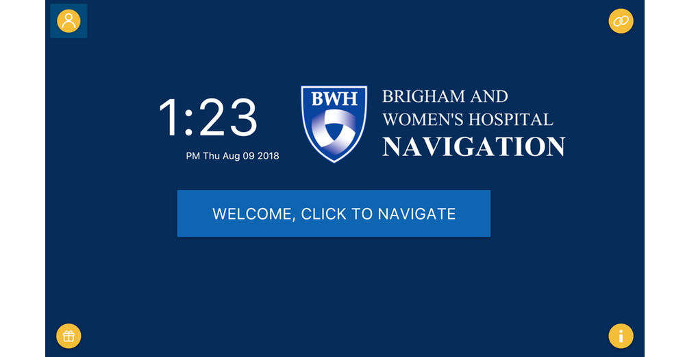
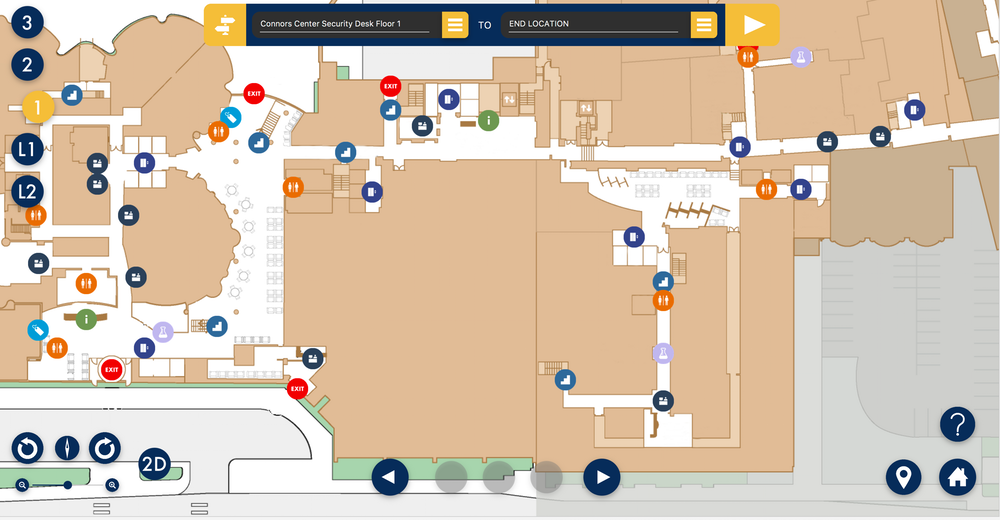
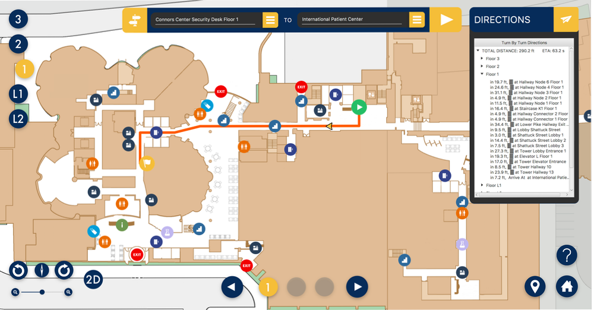
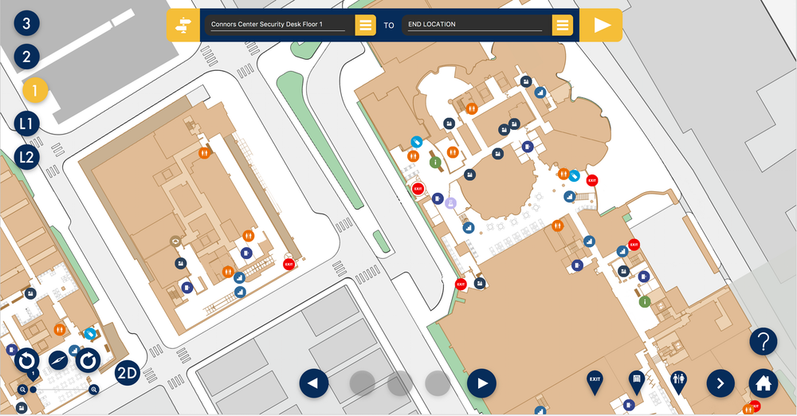
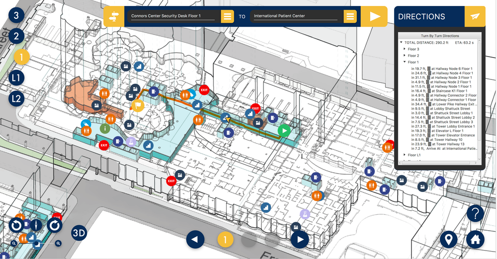
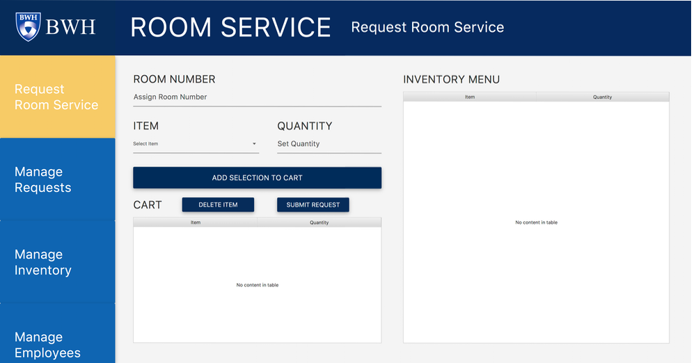
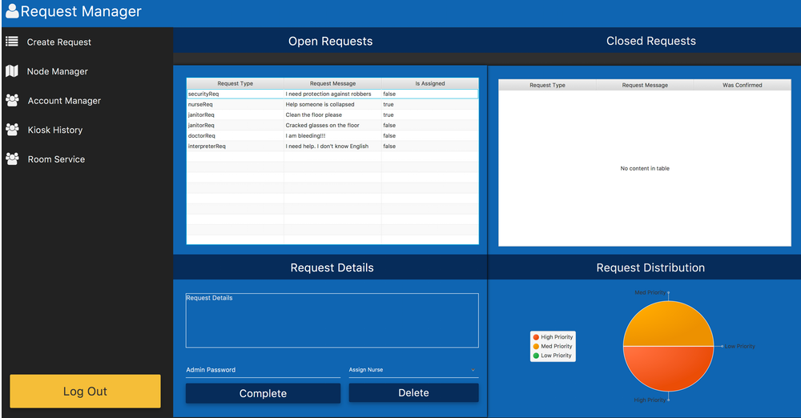
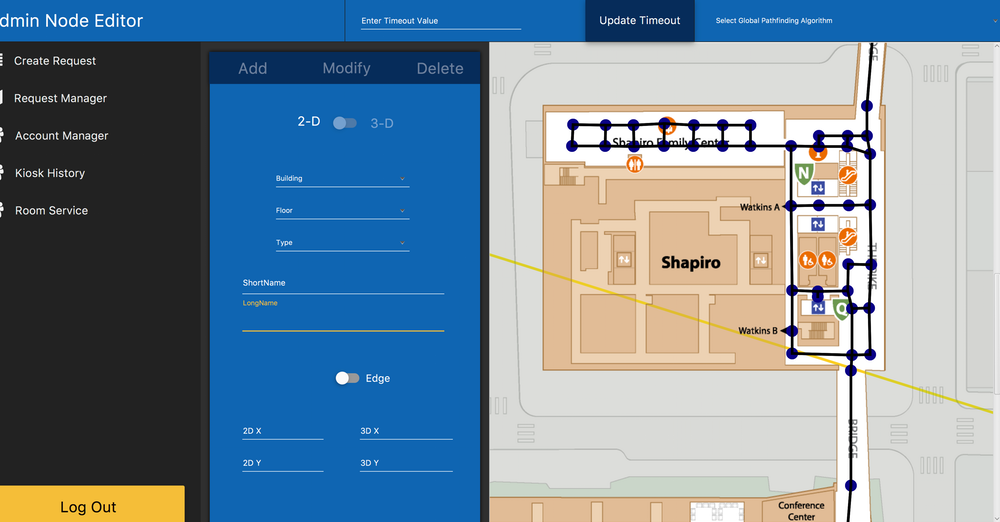
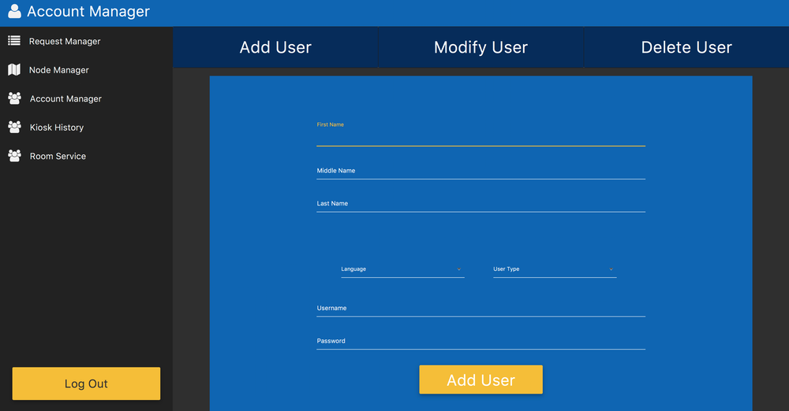
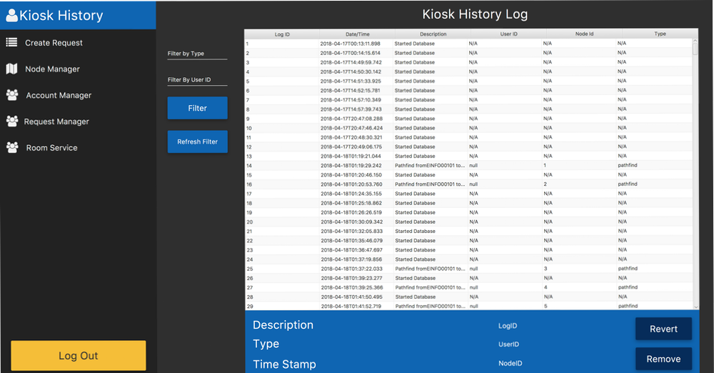

Hospital Path-finding Application
Assistant Lead Software Developer; Database specialty
March - May, 2018
Java
- This course had ten-person student teams working in a class competition to apply Agile development methodologies and software design patterns in Java to create an indoor pathfinding application, map builder, and integrated service request modules for Brigham & Women’s main hospital campus. The software systems that student teams created were to inform Brigham & Women’s Hospital about potential features, user interfaces, or design approaches that they might consider implementing.
- As an assistant lead software engineer, I helped gather software requirements through surveys, interviews, brainstorming, creating user stories, scenarios and storyboards. I was responsible for writing the database components of the application as well as the pathfinding UI. I designed the database subsystem of the application through the creation of UML use case, class, sequence, and activity diagrams. I was the technical leader of the entire database subgroup.
- As part of the database team I spent a lot of time building all of our databases and updating them to increase efficiency and killing bugs using the IntelliJ debugger
- Although I worked on the database team, I learned about many new systems through good team communication and helping other teams as assistant lead software developer
- I helped create a design that would be intuituve and accessible for all hopsital guests
- The application found paths through 2D and 3D nodes placed on respective 2D and 3D maps of the hospital
- We implemented the A* algorithm to determine the shortest path between a given start and end node
- I designed and built a fully rotatable and zoomable map with custom icons, an animated path, and more
- Using Dijkstra's algorithm, users can choose from a list of "quick destinations" like the nearest bathroom or cafeteria
- I helped create a user database that allows guests and employees to login for more functionality
- Users consisted of doctors, patients, nurses, and hospital staff
- Patients can request for help from nurses or hospital staff
- In order to fulfill requests, I helped create a request database where nurses, doctors, and staff can see the request, fulfill it, and then mark it as completed
- We created a map builder that allows admins to edit, add, and remove nodes quickly and intuitively
- I helped build a Room Service API that allows admins to keep track of inventory as well as users to request items from the inventory
- We created a kiosk history database that allows us to show the history of past interactions with the kiosk and revert them if needed (such as an accidental deletion of a user)
- We also integrated multiple other team's APIs for extra funcitonality and some special features that are explained below
- Our team successfully delivered the requested application at the end of the seven-week term. We were recognized for:
- Iteration 3 Best Feature: Emergency System
For this feature we used a server to allow all kiosks to communicate. Specifically, an admin could set every kiosk in the hopsital to "emergency mode" where the path to the nearest exit would be shown. We also used an arduino to create an automatic fire detector that would set off emergency mode if it detected a fire.
- Iteration 4 Best Feature: Web App
For this feature we created a companion android web app that allowed admin functionality. The web app was connected with our main database and all our information was passed between them. The app also had access to our emergency system.
Class Outcome
This class taught me much more than any other. Most importantly, learning to work with a large group on a single project was challenging, but in the end I gained project management skills, accountability, work-ethic, and confidence in myself. I never could have done this without the hard work of my team. Working together with them for 15+ hours per day, working through the night multiple times per week, and bonding over dinner was one of the most memorable and valuable learning experiences I've ever had.
On top of this, I learned a lot about designing and building databases, user interfaces, creating more efficient back-ends, designing clean and intuitive applications, and a strong understanding of java and programming in general
Idle screen

Home map screen. Notice the floor buttons on the left, start and end destination autofill search bar on top, rotation and zoom buttons bottom-left, breadcrumb floors bottom-middle, and quick-search, home button, and help on bottom-right

Path example with step-by-step directions (icons on step-by-step don't load on my mac), and breadcrumbs show which floors you are transversing

Example of the map after being rotated and zoomed out

Example of the 3D map with a path

Our room service API

Request Manager page showing open/closed requests as well as the details of the request. This page also gives the ability to remove requests or mark them completed. The pie chart on the right shows the type of requests that are currently in the system.

Node editor page. Here you can add/remove/modify nodes and edges on the 2D and 3D maps

Account manager page allows the creation, deletion, and modification of users

Kiosk history log that shows all past interactions with the kiosk and gives the ability to revert changes
